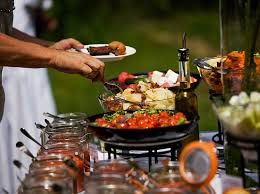

Catering Services Products and Services Delivery and Setup Fees Definition and Terms Our Recommended Vendors Exceptional Specials .Pay OnlineRequest More Info. Products and Services With Carter's Creative Catering, no party is too big or too small for us. The information and menus provided on this website are just some of the ideas and general guidelines of how we have provided successful services to clients in the past. Thinking of new and innovative menus and differently-themed meals is something that comes naturally to us. With the passion and dedication of our core staff, this can hardly be considered work for us--given how much we enjoy it! Our products and services are designed to match the food and style of service to the occasion. All aspects of the food and service will be taken into consideration during the planning stage. Our consultation session is organized and detail-oriented, providing you with exactly what you are looking for at a price that is within your budget. This consultation session is offered free of charge. By using our services, it will allow you to concentrate on hosting your event instead of worrying about the food and service provided to your guests. Check out our menu options to the right to see the various items and services we can provide you
